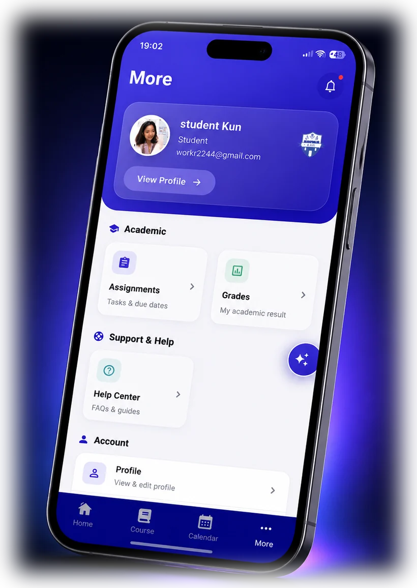

Featured

My EAAS
Student app for a second institution and a second Moodle server. Where the stock experience drops students into a web view, I built native screens.
Case study
- Problem
- Moodle's mobile fallback pushes students into a web view for most activity types — slow, unstyled, and impossible to use one-handed.
- What I did
- Replaced the fallbacks with native screens for 9+ activity types, and redesigned the course-content view around section tabs and a course map.
- Result
- Live on both stores. Choice, glossary, survey, wiki, feedback, database, workshop, forum and self-marked attendance all run natively.